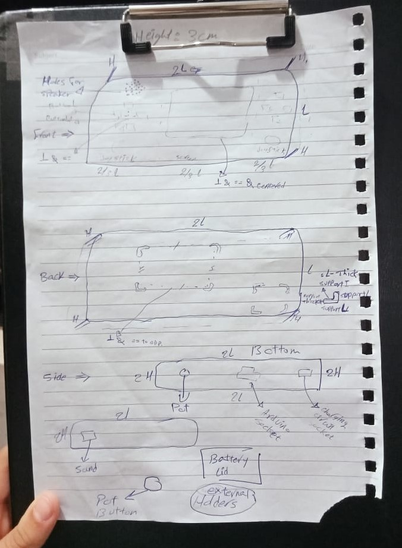
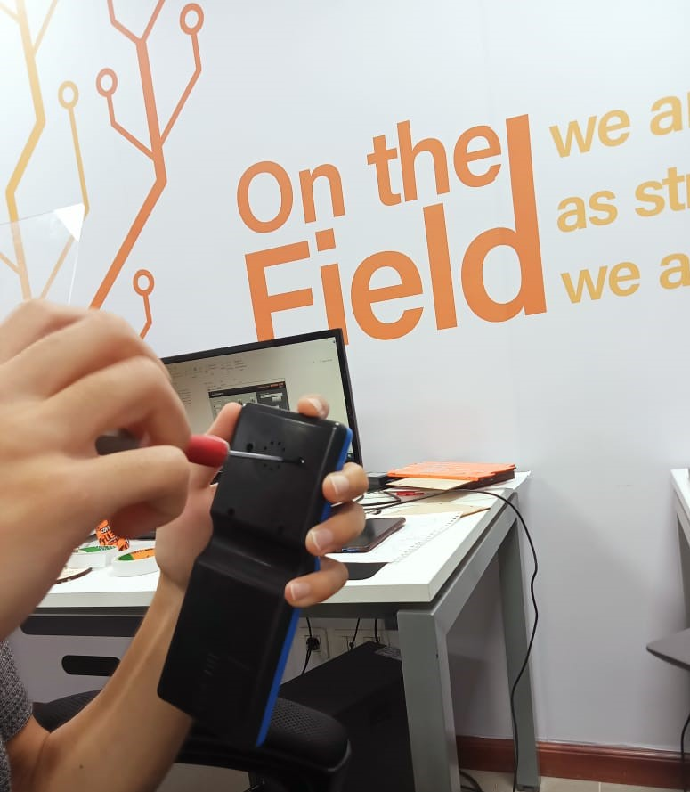
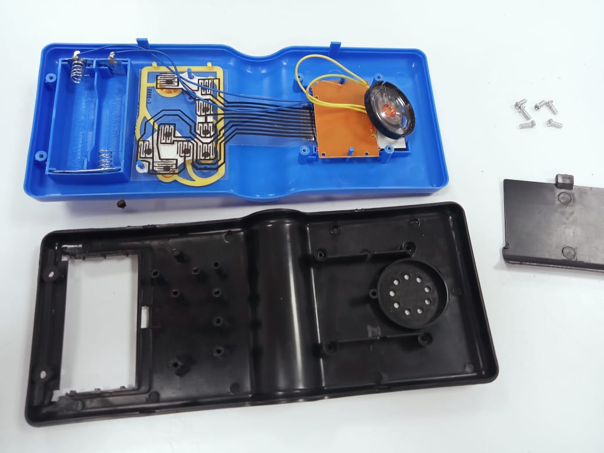
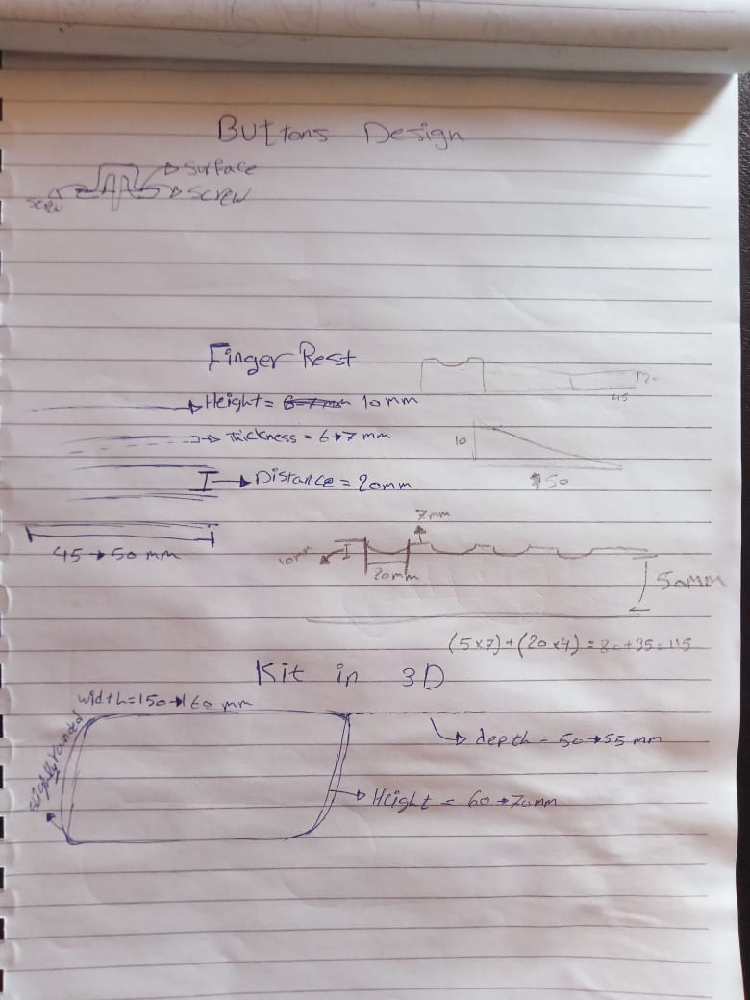
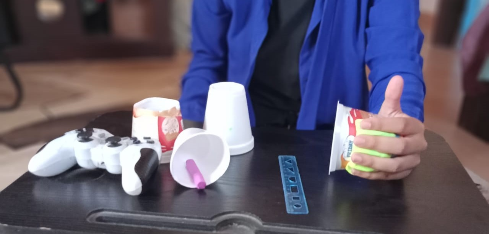
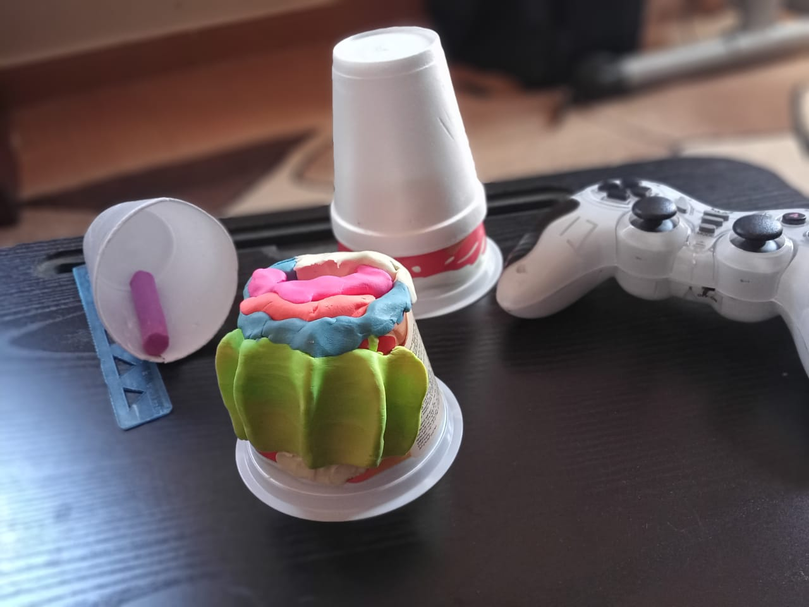
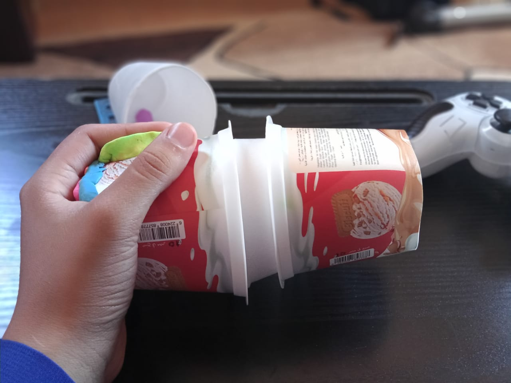
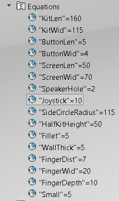
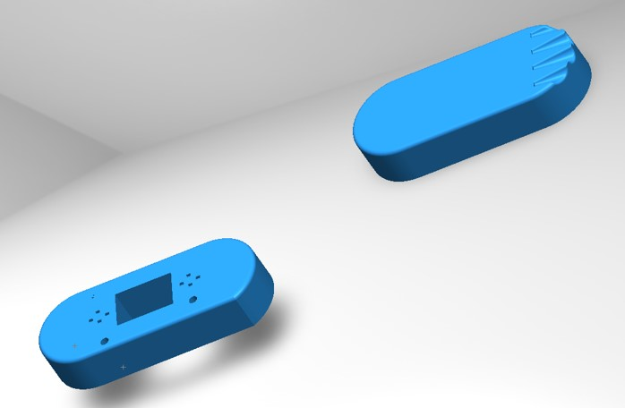

Overview
Joining forces with Reem and Hendawy, we are bringing games back to pockets!! Our final project is an attempt to revive the old Gameboi with 3d printed cooler features and a mix of ready-made games and ones of our creation.
Features
-
Pocket-sized, foldable 3d printed skeleton, customed to house different components right in place to avoid moving.
Controlled by 4-10 external buttons “or joysticks or whatever”.
Interacts with the user visually and auditorily through a screen and a speaker.
Reprogrammable through a socket in the kit to the microcontroller
Supports a wide range of games.
Components
-
LCD
Microcontroller
Speaker
Pushbuttons
Charging circuit
Battery & holder
Processes and Machines
-
3D printer: for the cover and buttons
MonoFab: for assembling different components
Arduino IDE: to program our own games
Searching and Drafting
For the sake of keeping this page clean and simple, here is our sketching environment. Find in this Notion the reason behind selecting each component and a comparison between different types. In there is also how we organised and broke down work to manageable pieces.
Initial Design
Viewing old projects, we created a preliminary design with rough estimates to the dimensions and holes.
Disassembly
Though imagination is beautiful, some errors only scream existent after assembly. To minimize those, we dismantled an old GameBoi...
 Notable Notes
Buttons need to either be screwed to the kit or have built-in supports underneath.
For a smoother click, we need either a flexible pcb or create different pcbs doing different functions and connecting them with flexible jumpers.
Leave open spaces in the kit for volume "potentiometer", charging, screws for fixation, and for a programming junction.
Kit Design
Trying to integrate the small size of ordinary GameBois and the comfortable design of PS controllers, we created a hybrid version.
To obtain the most comfortable dimensions/shape, we used modelling clay and plastic cups:""
  Playing Parametrically
Defining dimensions in terms of variables is way more maintainable. For this we use Parametric Design. Here are the equations we used...
Features for Reference
Used to make the finger rests; find a guide here.
To control your cut dimensions; find a guide here.
To make it round, comfortable, and neat; find a guide here.
Design Edition #1

IMPORTANT NOTES
After each major change in solidworks, save your work. If you have a weak heart, you may also like to create a pack up copy when you are done with each feature. Trust me, it hurts when a single click pushes you to recreate a 7-hour worth design. No need to mention to keep clicking ctrl+s, if things go sideways the closest thing to take the hit will be your laptop screen hitting the keyboard violently.